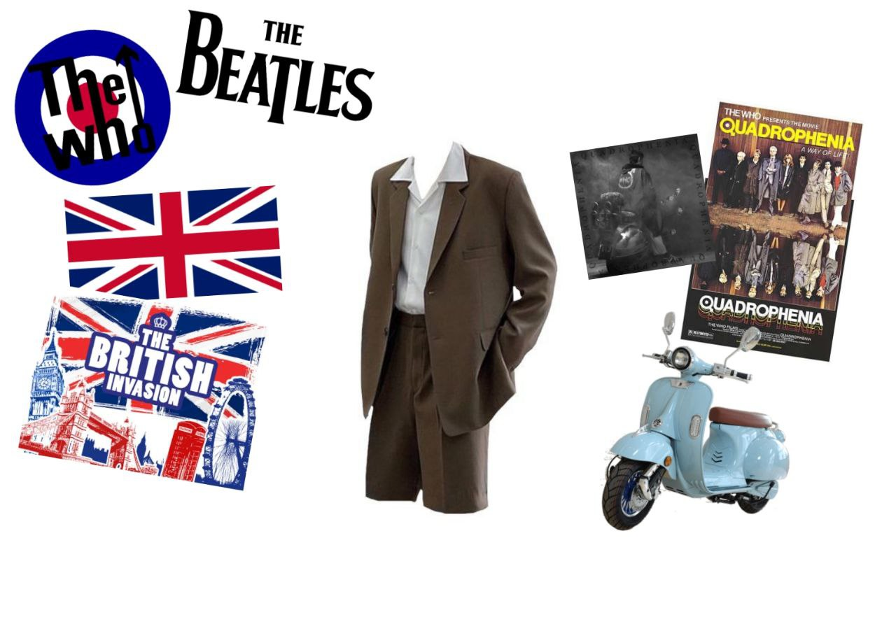

Одна из первых молодежных субкультура, сформировавшаяся в начале 60х в Британии как противопоставление себя "старому" обществу модерна, начиная собой поколение постмодерна. В следствии экономического бума в Британии, их основной чертой стал дорогой деловой вид, будь то галстуки или пиджаки, и этому они уделяли крайне болшое внимание. Также заметной их чертой являлось увлечение мотороллерами, и нередки были стычки с рокерами, которые были больше привержены к мощным мотоциклам.
На культуру модов сильно повлияло Британское Вторжение - явление в музыке 60х когда много современной музыки стало выходить именно в Британии, и самыми яркими фигурами этого явления стали группы The Beatles и The Who, в большей степени повлияв на культуру модов своими дерзкими текстами и мотивами.
Фильм Квадрофения, драматично и красочно отображающий жизнь обычного мода в Британии